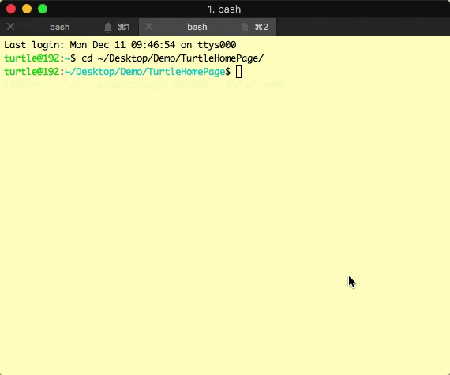

耗时一个半月，终于在跨年之前完成了我的博客的制作～
这个博客，是由Turto生成的。而Turto就是由我自制的一个用来生成我的网站的工具。
它大概长这个样子：

一个很关键的原因是在3月份的时候，我的旧博客引用的评论系统多说倒闭了，我当时的博客是由hexo生成的，使用的主题是TKL，它只支持多说作为评论系统。然后迫于无奈之下，我打算更换主题，没想到把自己的hexo弄挂了（折腾了两三周也没折腾好），所以我就把hexo生成的博客给搁置了，暂时在简书上更新博客。后面想到今年自己也学了些前端的知识，干脆弄一个自由度和可控度更高的个人博客吧，于是我就制作了Turto，还有我自己写的页面模板。
另外一个原因是我想找一个项目实践一下自己的js，毕竟纸上得来终觉浅嘛。
如果你有关注过王巍，不免会发现我的页面的样式和他的非常相似，是的，为了方便快捷而且美观，我在我的模版里大量拷贝了他的主题Vno - Jekyll的样式，并且在我的博客对应的github.io下做了相关的License声明，正如他所要求的那样。
Turto目前支持三个参数，分别是g(generation), n(new), c(clear)。用来生成页面、新建文章、清除生成结果用。
它由纯node.js书写，因为我的初衷是用来他将自己的博客工程化，所以没有将它写得像hexo那么有普适性，也没有把它写成一个node package，目前Turto只能面向我的模板工作。
写下Turto，主要是为了让我对我的博客有更高的控制度（就是我想让它有什么插件，就有什么插件）。而它也确实满足了我这个需求。现在我的博客里有着友盟进行统计、AddThis进行分享、disqus进行评论。
主要功能都集中在Turto g命令里，而生成网站的流程主要分为两个阶段，第一个阶段是构建页面，第二阶段是合并css、js并压缩，再把整个网站的内容移动到发布目录中。
第一阶段负责读入我写的markdown文件，渲染成html并将其内部的代码高亮，对于例如图片之类的内容做特殊的样式处理，将每篇渲染好的文章页面写到硬盘上。并按日期排序的做好博客列表页，博客列表分页和文章页页内导航都整理好。其中无可厚非的使用到了诸如marked、minimist、highlight.js等的一些第三方库。
第二阶段主要使用gulp来完成，这里不得不感谢一波山哥向我推荐的这个库，他也在前端上给了我不少的技术支持。
自己没有提前了解过js的架构就开始写这个项目，导致Turto的架构比较混乱。我是一个主要从事iOS开发的程序员，平时也接触界面比较多，遇到这种纯逻辑的项目，也只能沿用MVVM的思想来书写，只不过我个人感觉，项目里的依赖拆分还太粗糙就是了。
在书写Turto的过程中我有不少新的收获，不过今天怕是没有时间一吐而尽了，改天吧。
又到了一年的年末，过去就一直想写篇总结来回顾自己一年以来的成长，但是苦于没有一个像样的博客，也有可能只是纯粹的懒，所以一直都没有写。今年，自己的博客也上线了，怎么也是时候写了吧。2017发生了很多事情，我也从中学到了很多，并且在以社会人这个身份度过了一年以后，我开始更加地了解自己。 这是我的第一篇年终总结，没有经验，也不知从何说起，那我就脑子里冒出什么，写什么吧。先来说说年初发生的一件让我痛彻心扉，刻骨铭心的事吧！那就是我做了前叉韧带修复手术+半月板缝合术，原因是因为16年初的一场篮球赛。而术……
继续阅读最近比较忙，更新得有点慢，望谅解。上一章我介绍了Observable——一个功能就像一条数据流的类。这一章的内容比较简单，Subject和Observable还是挺相似的，如果说Observable是专门用来被订阅获取数据的一个“被动”的类，那么比起Observable，Subject倒是占据了一点主动。 它可以作为一个被订阅者供给外部订阅，也可以作为一个观察者，接收事件，然后发出给订阅者。所以它要比Obsavable更加的灵活一点，按照我的理解，它应该是一种支持一边接收事件，一边接收订阅者的……
继续阅读